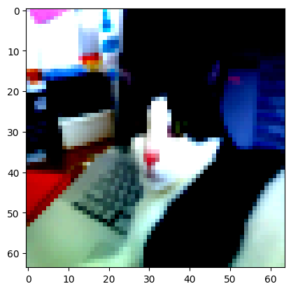
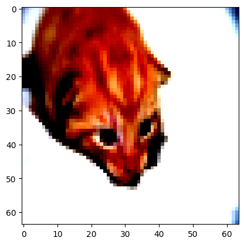
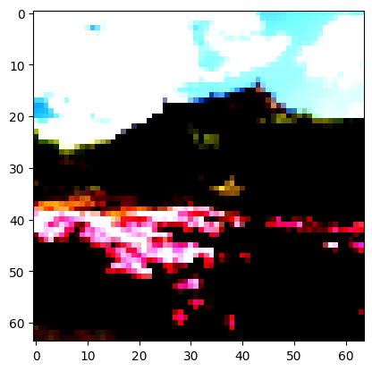

Table of Contents
1. implementation
1.1. setup
import numpy as np
import pickle as pkl
import matplotlib.pyplot as plt
import random
def sigmoid(z):
return 1.0 / (1.0 + np.exp(-z))
def lrloss(yhat, y):
return 0.0 if yhat == y else -1.0*(y*np.log(yhat) + (1 - y)*np.log(1 - yhat))
def lrpredict(model, x):
return 1.0 if model(x) > 0.5 else 0.0
print('done')
done
1.2. data loader
class CatData:
def __init__(self, data_file_path='./data/', data_file_name='cat_data.pkl'):
self.index = -1
with open('%s%s' % (data_file_path, data_file_name), mode='rb') as f:
cat_data = pkl.load(f)
self.data = [(np.reshape(vector, vector.size), 1) for vector in self.standardize(cat_data['train']['cat'])] + [(np.reshape(vector, vector.size), 0) for vector in self.standardize(cat_data['train']['no_cat'])]
self.shuffle()
self.train_mean = np.mean(np.concatenate((cat_data['train']['cat'], cat_data['train']['no_cat'])), axis=(0, 1, 2), keepdims=True).squeeze(0)
self.train_sd = np.std(np.concatenate((cat_data['train']['cat'], cat_data['train']['no_cat'])), axis=(0, 1, 2), keepdims=True).squeeze(0)
def __iter__(self):
return self
def __next__(self):
self.index += 1
if self.index == len(self.data):
self.index = -1
self.shuffle()
raise StopIteration
return self.data[self.index]
def __len__(self):
return len(self.data)
def __getitem__(self, i):
return self.data[i]
def shuffle(self):
random.shuffle(self.data)
def standardize(self, rgb_images):
mean = np.mean(rgb_images, axis=(0, 1, 2), keepdims=True)
sd = np.std(rgb_images, axis=(0, 1, 2), keepdims=True)
return (rgb_images - mean) / sd
data = CatData()
example = next(iter(data))
print(f'This is a {"cat" if example[1] == 1 else "non-cat"}')
image = example[0].reshape(64, 64, 3)
plt.imshow(image)
This is a cat

1.3. model
class CatModel:
def __init__(self, dimension=12288, weights=None, bias=None, activation=sigmoid, predict=lrpredict):
self._dim = dimension
self.w = weights or np.random.normal(size=self._dim)
self.w = np.array(self.w)*np.sqrt(1/dimension)
self.b = bias if bias is not None else np.random.normal()
self._a = activation
self.predict = predict.__get__(self)
self.train = True
self.train_mean = 0.0
self.train_sd = 1.0
def __str__(self):
return "Simple cell neuron\n\
\tInput dimension: %d\n\
\tBias: %f\n\
\tWeights: %s\n\
\tActivation: %s" % (self._dim, self.b, self.w, self._a.__name__)
def __call__(self, x):
if self.train:
yhat = self._a(np.dot(self.w, np.reshape(x, x.size)) + self.b)
else:
yhat = self._a(np.dot(self.w, np.reshape(self.preprocess(x), x.size)) + self.b)
return yhat
def preprocess(self, x):
return (x - self.train_mean) / self.train_sd
def load_model(self, file_path):
with open(file_path, mode='rb') as f:
mm = pkl.load(f)
self._dim = mm._dim
self.w = mm.w
self.b = mm.b
self._a = mm._a
def save_model(self):
f = open('results/cat_model.pkl','wb')
pkl.dump(self, f)
f.close
model = CatModel()
print(model)
Simple cell neuron
Input dimension: 12288
Bias: 0.284516
Weights: [ 0.01214724 -0.00284609 -0.00045149 ... -0.00123027 -0.01461718
-0.00642048]
Activation: sigmoid
1.4. trainer
class CatTrainer:
def __init__(self, dataset, model):
self.dataset = dataset
self.model = model
self.model.train_mean = self.dataset.train_mean
self.model.train_sd = self.dataset.train_sd
self.loss = lrloss
def accuracy(self, data):
return 100*np.mean([1 if self.model.predict(x) == y else 0 for x, y in data])
def train(self, lr, ne):
print("training model on data...")
accuracy = self.accuracy(self.dataset)
print("initial accuracy: %.3f" % (accuracy))
costs = []
accuracies = []
for epoch in range(1, ne+1):
J = 0
dw = 0
for x, y in self.dataset:
yhat = self.model(x)
J += self.loss(yhat, y)
dz = yhat - y
dw += x*dz
J /= len(self.dataset)
dw /= len(self.dataset)
self.model.w = self.model.w - lr*dw
accuracy = self.accuracy(self.dataset)
if epoch%10 == 0:
print('--> epoch=%d, accuracy=%.3f' % (epoch, accuracy))
costs.append(J)
accuracies.append(accuracy)
print("training complete")
print("final accuracy: %.3f" % (self.accuracy(self.dataset)))
costs = np.mean(np.array([np.array(costs)[i:i+10] for i in range(len(costs)-10)]), axis=1).tolist()
accuracies = np.mean(np.array([np.array(accuracies)[i:i+10] for i in range(len(accuracies)-10)]), axis=1).tolist()
return (costs, accuracies)
print('loading trainer')
trainer = CatTrainer(data, model)
print('training neuron')
costs, accuracies = trainer.train(0.001, 500)
print('saving model weights')
model.save_model()
print('done')
loading trainer training neuron training model on data... initial accuracy: 41.827 --> epoch=10, accuracy=58.852 --> epoch=20, accuracy=65.072 --> epoch=30, accuracy=70.813 --> epoch=40, accuracy=74.641 --> epoch=50, accuracy=77.512 --> epoch=60, accuracy=79.904 --> epoch=70, accuracy=81.818 --> epoch=80, accuracy=84.211 --> epoch=90, accuracy=85.646 --> epoch=100, accuracy=87.560 --> epoch=110, accuracy=87.081 --> epoch=120, accuracy=88.038 --> epoch=130, accuracy=88.517 --> epoch=140, accuracy=88.995 --> epoch=150, accuracy=89.474 --> epoch=160, accuracy=89.474 --> epoch=170, accuracy=89.952 --> epoch=180, accuracy=89.952 --> epoch=190, accuracy=89.952 --> epoch=200, accuracy=91.388 --> epoch=210, accuracy=91.866 --> epoch=220, accuracy=92.823 --> epoch=230, accuracy=93.301 --> epoch=240, accuracy=93.301 --> epoch=250, accuracy=93.301 --> epoch=260, accuracy=93.301 --> epoch=270, accuracy=93.780 --> epoch=280, accuracy=94.258 --> epoch=290, accuracy=94.737 --> epoch=300, accuracy=94.737 --> epoch=310, accuracy=95.215 --> epoch=320, accuracy=96.172 --> epoch=330, accuracy=96.172 --> epoch=340, accuracy=96.172 --> epoch=350, accuracy=96.172 --> epoch=360, accuracy=96.172 --> epoch=370, accuracy=96.651 --> epoch=380, accuracy=96.651 --> epoch=390, accuracy=97.129 --> epoch=400, accuracy=97.129 --> epoch=410, accuracy=97.129 --> epoch=420, accuracy=97.129 --> epoch=430, accuracy=97.129 --> epoch=440, accuracy=97.129 --> epoch=450, accuracy=97.129 --> epoch=460, accuracy=97.129 --> epoch=470, accuracy=97.129 --> epoch=480, accuracy=97.129 --> epoch=490, accuracy=97.608 --> epoch=500, accuracy=97.608 training complete final accuracy: 97.608 saving model weights done
2.5. test time
data = CatData()
non_cat_examples = []
cat_examples = []
for example in data:
image, label = example
if label == 0:
non_cat_examples.append(image)
else:
cat_examples.append(image)
cat_example = random.choice(cat_examples)
print('This is a cat!')
prediction = 'not a cat' if lrpredict(model, cat_example) == 0 else 'cat'
print(f'The neuron thinks this is a {prediction}')
plt.imshow(cat_example.reshape(64, 64, 3))
plt.show()
print('\n\n')
non_cat_example = random.choice(non_cat_examples)
print('This is not a cat!')
prediction = 'not a cat' if lrpredict(model, non_cat_example) == 0 else 'cat'
print(f'The neuron thinks this is a {prediction}')
plt.imshow(non_cat_example.reshape(64, 64, 3))
This is a cat! The neuron thinks this is a cat

This is not a cat! The neuron thinks this is not a cat
